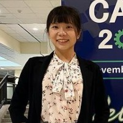

Robotics, Robot Learning, VR

Hello! I am Ching-I (Isabella) Huang, a fourth-year Ph.D. student enrolled at the Institute of Electrical and Control Engineering, National Yang Ming Chiao Tung University in Taiwan. Under the supervision of Prof. Hsueh-Cheng Wang, I am currently engaged in research focusing on robot-learning approaches and virtual reality technologies aimed at improving human-robot interaction. My research interests primarily center around Human-Robot Teaming and VR Teleoperation.
I have participated in the DARPA SubT Challenge in 2020 (communication lead) and the RobotX Maritime Challenge in 2022 (3rd place, perception lead). Additionally, in 2023, I had the opportunity to visit Prof. Lap-Fai (Craig) Yu's research group at George Mason University, where I collaborated on a project concerning optimal theories for gaming using augmented reality.
Fed-hanet:Federated visual grasping learning for human robot handovers
IEEE Robotics and Automation Letters - 2023
Ching-I Huang, Yu-Yen Huang, Jie-Xin Liu, Yu-Ting Ko, Hsueh-Cheng Wang, Kuang-Hsing Chiang and Lap-Fai Yu
Our Fed-HANet system has made significant strides in object-agnostic end-to-end planar grasping, offering capabilities of up to six degrees of freedom (DoF) while maintaining respect for the privacy and personal space of human counterparts. Through experiments, our Fed-HANet system demonstrated accuracy levels comparable to centralized non-privacy-preserving systems, surpassing baseline methods reliant on fine-tuning. Additionally, we investigated the efficacy of a depth-only approach, comparing its performance to a state-of-the-art method, yet highlighting the superiority of RGB inputs for enhanced grasp success. Furthermore, we conducted a user study involving 12 participants to evaluate the practical applicability of our proposed system within a robotic framework.
Paper Video System InferenceTowards more efficient efficientdets and real-time marine debris detection
IEEE Robotics and Automation Letters - 2023
Federico Zocco, Tzu-Chieh Lin, Ching-I Huang, Hsueh-Cheng Wang, Mohammad Omar Khyam and Lap-Fai Yu
In our pursuit of enhancing the efficiency of Autonomous Underwater Vehicle (AUV) vision systems for real-time marine debris detection, we have achieved significant advancements through the optimization of state-of-the-art object detectors, specifically focusing on EfficientDets. Our efforts have yielded notable improvements, including a 1.5% increase in Average Precision (AP) on D0, 2.6% on D1, 1.2% on D2, and 1.3% on D3, all achieved without incurring additional GPU latency. Additionally, we have curated and publicly released a specialized dataset tailored for the detection of in-water plastic bags and bottles. Our enhanced EfficientDets models have been rigorously trained on this dataset, alongside integration with two publicly available datasets dedicated to marine debris detection.
Paper VideoA Heterogeneous Unmanned Ground Vehicle and Blimp Robot Team for Search and Rescue using Data-driven Autonomy and Communication-aware Navigation
Journal of Field Robotics - 2022
DARPA SubT Challenge - Urban Circuit 2020
Chen-Lung Lu*, Jui-Te Huang*, Ching-I Huang, Zi-Yan Liu, Chao-Chun Hsu, Yu-Yen Huang, Siao-Cing Huang, Po-Kai Chang, Zu Lin Ewe, Po-Jui Huang, Po-Lin Li, Bo-Hui Wang, Lai-Sum Yim, Sheng-Wei Huang, MingSian R. Bai, and Hsueh-Cheng Wang(*Equal Contribution)
We developed a heterogeneous team of unmanned ground vehicles and blimp robots for navigating unknown subterranean environments in search and rescue missions. Our system integrates novel millimeter-wave radar for perception and employs deep reinforcement learning for cross-modal representations. Navigation is facilitated by simulation-trained deep neural networks, ensuring effective collision avoidance and goal-directed movement. Our communication system combines mesh WiFi, XBee, and UWB modules, alongside deployable spherical nodes and miniature cars for mobile communication. Field tests were conducted to evaluate propagation and signal strength indices, addressing challenges such as non-line-of-sight propagation and fading reception.
Paper Video Team
Cross-Modal Contrastive Learning of Representations for Navigation Using Lightweight, Low-Cost Millimeter Wave Radar for Adverse Environmental Conditions
IEEE Robotics and Automation Letters - 2021
Jui-Te, Huang, Chen-Lung Lu, Po-Kai Chang, Ching-I Huang, Chao-Chun Hsu, Po-Jui Huang, and Hsueh-Cheng Wang
We advocate for utilizing single-chip millimeter-wave (mmWave) radar as robot perception, particularly in challenging environments such as fog, smoke, or dust. To address the inherent noise and sparsity of mmWave radar signals, we propose a cross-modal contrastive learning for representation (CM-CLR) method. This method aims to maximize the agreement between mmWave radar data and LiDAR data during training, thereby enabling autonomous navigation using radar signals.
Paper Video GithubAssistive Navigation Using Deep Reinforcement Learning Guiding Robot With UWB/Voice Beacons and Semantic Feedbacks for Blind and Visually Impaired People
Frontier in Robotics and AI - 2021
Chen-Lung Lu, Zi-Yan Liu, Jui-Te Huang, Ching-I Huang, Bo-Hui Wang, Yi Chen, Nien-Hsin Wu, Hsueh-Cheng Wang, Laura Giarré, Pei-Yi Kuo
Facilitating navigation in pedestrian environments is critical for enabling people who are blind and visually impaired (BVI) to achieve independent mobility. A deep-reinforcement-learning-based assistive guiding robot with ultrawide-bandwidth (UWB) beacons that can navigate through routes with designated waypoints was designed in this study.
PaperWfh-vr: Teleoperating a robot arm to set a dining table across the globe via virtual reality
IEEE/RSJ International Conference on Intelligent Robots and Systems - 2022
Lai Sum Yim, Quang TN Vo, Ching-I Huang, Chi-Ruei Wang, Wren McQueary, Hsueh-Cheng Wang, Haikun Huang and Lap-Fai Yu
This paper introduces an accessible virtual reality-based teleoperation system for controlling a low-cost robot arm (LoCoBot) using a consumer-grade VR device (Oculus Quest 2). our Work-from-Home Virtual Reality (WFH-VR) system offers a seamless connection between the user and the remote robot arm. Virtual representations of the robot and objects are streamed to the VR interface, facilitating manipulation tasks with or without network latency. User studies demonstrate the system's effectiveness, enabling novices to perform dexterous manipulation tasks beyond traditional keyboard controls.
PaperA Learning- based modular heterogeneous usv and uav team in the maritime robotx 2022 competition
RobotX Maritime Challenge - 2022
Po-Jui Huang, Ching-I Huang, Sin-Kiat Lim, Po-Jui Huang, Ming-Fong Hsieh, Lai Sum Yim, Yu-Ting Ko, Hao-Yang Hung, Yi Chen, Jie-Xin Liu,Li-Wei Liou, Sun-Fu Chou, Yi-Chen Teng, Kai-Rui Weng, Wang-Chuan Lu, and Hsueh-Cheng Wang
Our exploration team, consisting of a USV and UAV with sensor arrays and autonomous modules, underwent refinement via hardware-in-the-loop (HIL) simulations. Utilizing Gazebo from Virtual RobotX (VRX), we developed a perception dataset for deep reinforcement learning algorithms in maritime environments. Results demonstrated the effectiveness of these algorithms, surpassing models trained solely with a UGV. We enhanced fleet management with a VR interface and developed behavior trees for task execution. Quantitative assessments were conducted in simulations before deployment on a WAM-V platform.
Video TeamDuckiepond 2.0: an Education and Research Environment of Reinforcement Learning-based Navigation and Virtual Reality Human Interactions for a Heterogenous Maritime Fleet
Moos-DAWG'22 - 2022
Ching-I Huang, Hao-Yang Hung, Lai Sum Yim, Quang TN Vo, Lap-Fai Yu and Hsueh-Cheng Wang
Duckiepond 2.0 expands on the Duckiepond education and research environment by introducing the Duckieboat platform and simulation environments in Gazebo and Unity. Duckieboat (DBT22) utilizes inflatable boats and outboard motors, featuring modular designs for sensor towers, autonomy boxes, and communication modules. These components can be deployed on various autonomous surface vehicles, enabling longer communication ranges and hardware-in-the-loop (HIL) developments. Duckiepond 2.0 inherits Duckietown's fleet management capabilities and supports MOOS-ROS bridge, PyIvP, and non-ROS WebSocket for autonomy education. Gazebo simulations aid in developing deep reinforcement learning algorithms for collision avoidance, navigation, and docking. Additionally, Duckiepond 2.0 introduces "supervised autonomy" through VR interactions, allowing a human supervisor to control the maritime fleet using a consumer-grade VR device (Oculus Quest 2). This setup facilitates search and rescue missions with virtual representations of Duckieboats and surrounding objects for streamlined operation.
Long-term Operation, Low-Cost, Multi-Domain Collaborative Autonomous Maritime and Aerial Platforms via Duckieboat and Duckiefloat
RobotX Interactive Forum 2019 - 1st Place Spotlight Poster
Ching-I Huang*, Li-Wen Chiu*, Chao-Chun Hsu, Kuan-Lin Chen, Chih-Chuan Chang, Yi Chen, and Hsueh-Cheng Wang
Duckieboat serves as the core of the Duckiepond development environment, facilitating collaborative maritime autonomy for both homogeneous and heterogeneous maritime vehicles. Our research demonstrates multi-vehicle behaviors in track-and-trail tasks, advancements in obstacle avoidance utilizing classic and learning-based approaches. Additionally, we enhance capabilities across multiple domains with Duckiefloat, an autonomous blimp developed for the DARPA Subterranean Challenge, optimized for long-term observation tasks with minimal power consumption to excute long-period observation tasks.